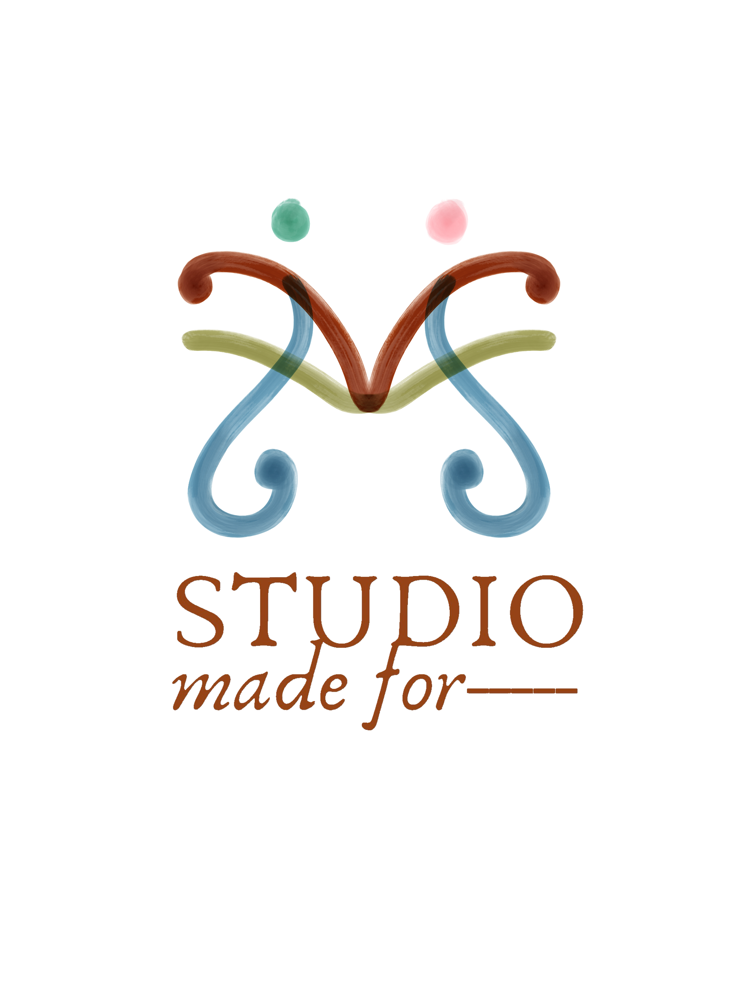

"Where people shape spaces, and spaces shape lives."
Made For -
- THE FIRST HOME.
- THE GROWING FAMILY.
- THE SOLO RENTER.
- THE WEEKEND TRAVELER.
- THE NEIGHBORHOOD CAFE.
- THE FIVE-STAR HOTEL.
- THE EVERYDAY MEAL.
- THE CELEBRATION.
- THE QUIET MOMENTS

"Pana-Panahon"
STUDIO MADE FOR- draws inspiration from the changing weather of the Philippines, particularly Amihan and Habagat, as a reflection of how people move through different states in life. The unfinished dash represents the people and purpose that complete each project.
Every space is made for something different, shaped by the people who experience it.
Amihan
represents movement, clarity, and energy, translated into spaces that encourage focus, interaction, and productivity.
Habagat
represents pause, comfort, and reflection, translated into spaces that allow people to rest, recharge, and slow down.
Together, they reflect the belief that spaces should adapt to people, because we are never the same every day.
THE WEATHER
Amihan and Habagat represent two contrasting conditions: movement and pause.
Like the weather, people are constantly changing. We move between moments of energy, focus, rest, and reflection.
THE HUMAN
THE SPACE
This became the idea that spaces should respond to different human states and needs, rather than being designed for only one way of living.
From this came STUDIO MADE FOR—. The unfinished phrase leaves space for every project, person, and purpose to complete it differently.